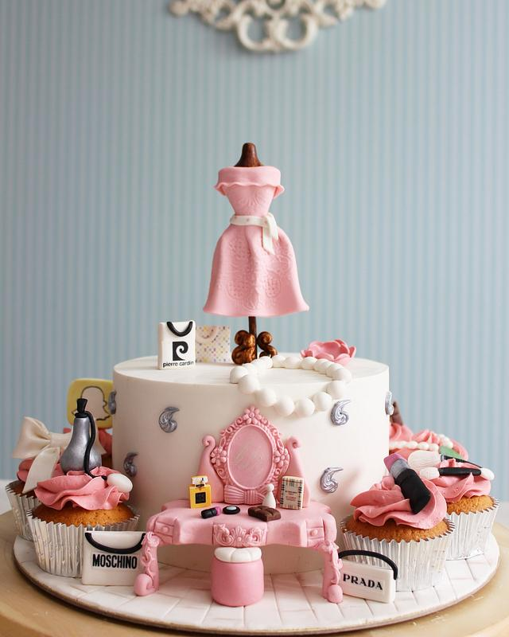

Hello, This site is dedicated to practicing my skills as a devops engineer. If you were refered to this site, then it was clearly for inspiration or a sample of my skill set. Slowly, I add features to build a full funcioning site representing tools utilized in Devops. Initially, this will be a site where in the main pic above, it will be a photo of the cake of the day, with a fashion theme,or sometimes not. It all depends on how many fashion inspired cakes there are. But it's cakes in general.